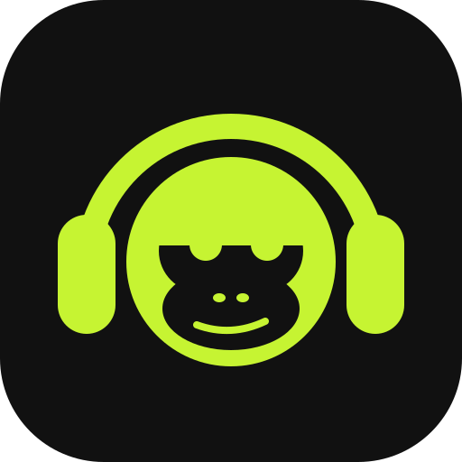

GIF

Monke
Monke
Ses kanalı
Ses odası
Katıl
Giriş cihazı
Varsayılan
Gürültü engelleme
Giriş ses seviyesi
100
Çıkış ses seviyesi
100
Ses paneli
Bastığın ses sesteki herkese çalar. Sağ tıkla: yeniden adlandır / sil. En fazla 5 saniye; uzunsa ilk 5 saniyesi alınır.
Bu seslerin sana gelen seviyesi
70
Ses bağlı
Ses odası
Sesi açmak için tıkla
Fotoğrafı bırak, gönderelim
Anket aç
+ Seçenek ekle
Süre
5 dakika
15 dakika
30 dakika
1 saat
6 saat
1 gün
Gönder
Powered by KLIPY
Ayarlar
Profil fotoğrafı
Değiştirmek için tıkla
Kaldır
Tema
Koyu
Açık
Lacivert
Gri
Kahverengi
Mor
Orman yeşili
Bordo
Petrol
Gece siyahı
Saydam mod
Saydamlık
30%
Giriş sesi (join sound)
Yok (varsayılan ses)
Dinle
Kaldır
Yükle
Sese girince herkese bu ses çalar. En fazla 3 saniye; uzunsa ilk 3 saniyesi alınır.
Bildirim sesleri
Biri sese girince
Biri sesten çıkınca
Yeni mesaj gelince
Ekran bildirimi
Uygulama arkadayken göster
Odadan çık
Web